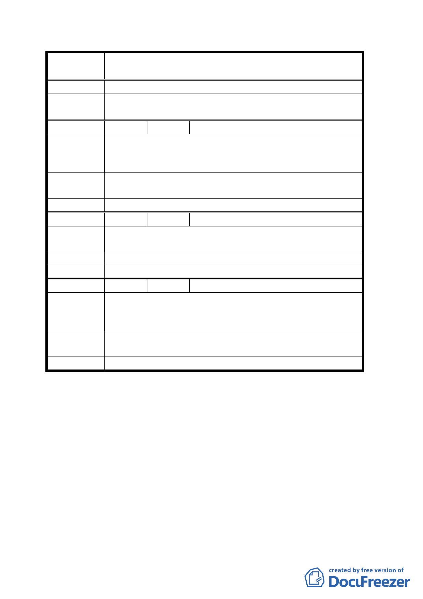

案
名
變更臺北市內湖區西湖段四小段 186 地號暨文德段五小段
155 地號市場用地為停車場用地計畫案
泛徵詢鄰近居民及廠商意見。
委員會決議
計畫說明書已規定停車場用地得依「都市計畫公共設施用
地多目標使用辦法」辦理。
編 號 ２ 陳情人 瑞光里侯衍泰里長
該區段目前停車使用尚未達飽和，又無迫切需求性，而且
陳 情 理 由 對周邊民眾生活造成嚴重衝擊，卻只是爲了滿足內湖科技
園區停車問題。
建議辦法
本里嚴正聲明市府千萬不可貿然躁進，否則將引起本里民
眾強烈的抗爭。
委員會決議 同決議一。
編 號 ３ 陳情人 湖元里辦公處
陳情理由
市府只爲了滿足內科停車問題，忽略對週邊民眾生活造成
嚴重衝擊，未了解該區段目前停車使用。
建 議 辦 法 建議維持市場用地。
委員會決議 同決議一。
編
號4
陳情人 李王秀英等共 34 人
平面以上設停車場，嚴重影響鄰近居民生活品質及居家環
陳 情 理 由 境。目前該區域並無停車迫切性（目前 162 停車位常未停
滿）。
建議辦法
反對瑞光市場變更為停車場用地，未來使用應將捷運車站
一併保留考量。
委員會決議 同決議一。
討論事項二
案名：變更臺北市文山區木柵路五段附近地區主要計畫案
說明：
一、本案係市府以九十三年六月九日府都綜字第○九三○六三
二二一○三號函送到會，並自九十三年六月十日起公開展
覽三十天。
二、法令依據：都市計畫法第二十七條第一項第四款。
三、申請單位：臺北市政府
三